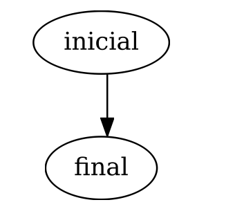
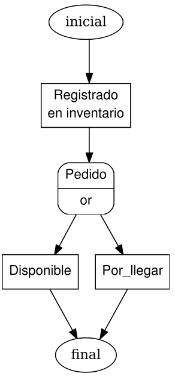
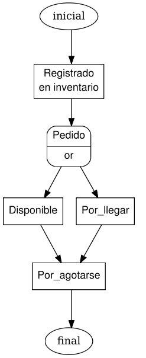

Crear el flujo de trabajo utilizando un archivo XML¶
El flujo de trabajo (workflow) es el estudio de los aspectos operacionales de una actividad de trabajo: cómo se estructuran las tareas, cómo se realizan, cuál es su orden correlativo, cómo se sincronizan, cómo fluye la información que soporta las tareas y cómo se le hace seguimiento al cumplimiento de las tareas. Más información AQUI.
A continuación seguimos los siguientes paso:
1° PRIMER PASO¶
- Crearemos un archivo llamado productos.xml.
- Lo guardamos en el siguiente directorio <HOME>.safet/flowfiles/.
2° SEGUNDO PASO¶
Encabezado¶
Abrimos el archivo productos.xml y Escribimos el siguiente encabezado (XML) que aparece en el siguiente block:
<?xml version='1.0' encoding='UTF-8'?> <!DOCTYPE yawl SYSTEM 'file:///home/cenditel/.safet/dtd/yawlworkflow.dtd'> <!-- Documento : productos.xml Creado : 16/10/08 09:27 AM Autor : nombre_autor Descripcion: Archivo generado por plantilla de la Libreria SAFET -->Nota
El comentario es opcional.
3° TERCER PASO¶
Etiquetas Principales¶
En el archivo productos.xml se utilizaran las siguientes etiquetas principales (XML):
- <yawl>: Etiqueta principal yawl.
- <workflow>: Nombre del flujo.
- <token>: Ficha: Nombre de la tabla y Nombre del campo.
Abrimos el archivo productos.xml y debajo del Encabezado copiamos el siguiente código (XML) que aparece en el siguiente block:
<yawl version="0.01"> <workflow id="productos"> <token keysource="productos" key="id"/> <!-- **CUERPO** Aqui vamos a colocar todos los estados o tareas. ######################### ## - INICIAL ## ## - REGISTRADO. ## ## - PEDIDO ## ## - DISPONIBLE ## ## - POR_LLEGAR ## ## - POR_AGOTARSE ## ## - AGOSTADO ## ## - FINAL ## ######################### --> </workflow> </yawl>Nota
- EL cuadro se me muestra comentado es opcional solo para visualizar como van hacer las tareas.
- Todas las tareas o estados van donde esta el cuadro opcional.
4° CUARTO PASO¶
Condiciones Principales (INICIAL Y FINAL)¶
En las condiciones principal (inicial y final) se utilizaran las siguientes etiquetas (XML):
- <condition>inicial: Condición inicial
- <condition>final: Condición final
- <port> inicial: Dentro de esta etiqueta van las conexiones continene una conexión.
- <port> final: No tiene a quien conectarse.
- <connection> inicial: Como no hay nada registrado inicio apunta a final
- <connection> final: final no apunta a nada
Abrimos el archivo productos.xml y dentro de las Etiquetas Principales insertamos el siguiente código (XML) que aparece en el siguiente block:
<!-- ##################### # Condición inicial # ##################### --> <condition type="start" id="inicial"> <port side="forward" type="split"> <connection query="true" options="" source="final"/> </port> </condition> <!-- ################### # Condición final # ################### --> <condition id="final"> <port side="forward" type="split"> <connection source=""/> </port> </condition>Ahora ejecutaremos los siguiente pasos:
- Crearemos una carpeta llamada tmp en directorio $HOME/tmp, desde la consola de comando.
$ mkdir $HOME/tmp
- Crearemos un archivo con extensión .py en directorio $HOME,desde la consola de comando.
$ touch $HOME/Script_graficos.py
- Abrimos el archivo .py que creamos en el paso anterior la cual lo llamamos Script_graficos.py y copiamos el siguiente Script**(python)**:
# -*- coding: utf-8 -*- import Safet import os myhome = os.getenv("HOME") mymedia = myhome + "/tmp" myurl = "http://localhost" myinflow = Safet.MainWindow(myhome) myinflow.setMediaPath(mymedia ) myinflow.setHostURL(myurl) result = myinflow.login("admin","admin") myconsult = u"operacion:Generar_gráfico_coloreado \ Cargar_archivo_flujo: %s/.safet/flowfiles/productos.xml" % (myhome) if not result: print "Authentication failed" exit() result = myinflow.toInputConsole(myconsult) if not result: print "Consult failed error: %s" % (myinflow.currentError()) exit() print u"%s" % (myinflow.currentJSON())
- Ejecutamos el archivo Script_graficos.py, desde la consola de comando como usuario normal.
$ python $HOME/Script_graficos.pyNota
Al ejecutar el archivo .py (Script_graficos.py) nos mostrara un mensaje donde salen reflejadas las 2 Condiciones Principales (INICIAL Y FINAL):
QFSFileEngine::open: No file name specified QSqlDatabasePrivate::removeDatabase: connection '/home/cenditel/.safet/mydb.db' is still in use, all queries will cease to work. .............wheretokens: on .......newnode: |inicial| # Nueva condición inicial .......newnode: |final| # Nueva condición final qt_temp.XM6827.svg # Obtenemos la nueva imagen con su nombre la cual contiene el gráficoEl nombre de la imagen (.svg) es temporal, es decir su nombre varia constante mente.
- Nos vamos al directorio $HOME/tmp,desde la consola de comando.
$ cd $HOME/tmpNota
En el directorio $HOME/tmp se escriben los archivos de grafos (.svg o .png), usted puede definir el directorio de escritura y temporal utilizando los siguientes parámetros en el archivo safet.conf que se encuentra en el directorio $HOME/.safet/.
plugins.graphviz.infile = /home/fulano/tmp # directorio para archivos temporales plugins.graphviz.outfile = /home/fulano/tmp # directorio de salida para archivos de grafo (.svg o .png)
- Escribimos el comando ls para ver las imágenes .svg,desde la consola de comando.
tmp$ ls qt_temp.XM7929.svg
- Con el comando eog vemos la primera imagen .svg(qt_temp.XM6827.svg ) ,desde la consola de comando.
tmp$ eog qt_temp.XM6827.svgNota
Si realizó los pasos correctos se mostrara el grafo, en el cual se define lo siguiente:
Figura 28: Condiciones (inicial y final).
Descripción de la Figura 28: Condiciones (inicial y final).:
- El circulo inicial apunta al circulo final.
- En este inventario esta vacío.
- En esta imagen vemos como se conectan las condiciones inicial y final.
Nota
En esta imagen no se muestran ninguna tarea ya que no hemos realizado ninguna, para ello pasamos al 5° QUINTO PASO donde comenzaremos a realizar las tareas.
{kind=link}
5° QUINTO PASO¶
5.1 - PRIMERA TAREA (Registrado)¶
En la primera tarea (Registrado) se utilizaran las siguientes etiquetas (XML):
- <connection>: Registrado apunta a final, esto varia.
- <task>: Nombre de la tarea (Registrado) y su mensaje.
- <port>: Registrado apunta a una opción.
- <variable>: Variable vRegistro donde me aparecerá un mensaje la hora en el cual se hizo ese registro.
Abrimos el archivo productos.xml y insertamos el código (xml) de la tarea Registrado que aparece en el siguiente block:
Nota
La condición inicial se modifico en la etiqueta <connection> la cual apuntará la tarea Registrado.
<!-- ********************* | Condición inicial | ********************* --> <condition type="start" id="inicial"> <port side="forward" type="split"> <connection query="select status from productos" options="Registrado" source="Registrado"/> </port> </condition> <!-- ************** | Registrado | ************** --> <task title="en inventario" id="Registrado"> <port side="forward" type="split"> <connection query="true" options="" source="final"/> </port> <variable config="1" documentsource="select id,nombre,status from productos" type="sql" tokenlink="" id="vRegistrado" rolfield="(select rol from productos_registro where productoid=productos.id and regstatus='Registrado') as rol" scope="task" timestampfield="(select fecha from productos_registro where productoid=productos.id and regstatus='Registrado') as fecha"/> </task> <!-- ******************* | Condición final | ******************* --> <condition id="final"> <port side="forward" type="split"> <connection source=""/> </port> </condition>Ahora ejecutaremos los siguiente pasos:
Nota
En el 4° CUARTO PASO creamos la carpeta llamada tmp y el archivo llamado .py (Script_graficos.py) ,la cual se utilizaran en este paso a seguir.
- Ejecutamos el mismo archivo .py (Script_graficos.py) con el mismo contenido, desde la consola de comando como usuario normal.
$ python $HOME/Script_graficos.pyNota
Al ejecutar el archivo .py (Script_graficos.py) nos mostrara un mensaje donde salen reflejadas las 2 Condiciones principales y la primera tarea (Registrado):
QFSFileEngine::open: No file name specified QSqlDatabasePrivate::removeDatabase: connection '/home/cenditel/.safet/mydb.db' is still in use, all queries will cease to work. .............wheretokens: on .......newnode: |Registrado| # Nueva tarea Registrado .......newnode: |inicial| # Condición inicial .......newnode: |final| # Condición final qt_temp.XM6827.svg # Obtenemos la nueva imagen con su nombre la cual contiene el gráficoEl nombre de la imagen (.svg) es temporal, es decir su nombre varia constante mente.
Nota
El nombre de la imagen (.svg) es temporal, es decir su nombre varia constante mente.
- Nos vamos al directorio $HOME/tmp,desde la consola de comando.
$ cd $HOME/tmp
- Escribimos el comando ls para ver las 2 imágenes .svg que hemos obtenido ,desde la consola de comando.
tmp$ ls qt_temp.XM6827.svg ,qt_temp.XM6970.svg
- Con el comando eog vemos la la segunda imagen .svg(qt_temp.XM6827.svg ) ,desde la consola de comando.
tmp$ eog qt_temp.XM6970.svgNota
Si realizó los pasos correctos, se mostrara el grafo como en la imagen siguiente Figura 29: Registrado:

Figura 29: Registrado
Descripción de la Figura 29: Registrado:
- La condición del circulo inicial apunta a la primera tarea de cuadro Registrado.
- La primera tarea Registrado apunta a la condición de circulo final
- En esta imagen vemos como se conectan la condición inicial con la primera tarea Registrado y la tarea con la condición final.
5.2 - SEGUNDA TAREA (Pedido)¶
En la segunda tarea (Pedido) se utilizaran las siguientes etiquetas (XML):
- <connection>: Pedido apunta a final, esto varia.
- <task>: Nombre de la tarea (Pedido)
- <port>: Pedido apunta a dos opciones con el operador OR.
- <variable>: Variable vPedido donde me aparecerá un mensaje la hora en el cual se hizo ese pedido.
Abrimos el archivo productos.xml y insertamos el código (xml) de la tarea Pedido que aparece en el siguiente block:
Nota
La tarea Registrado se modifico en la etiqueta <connection> la cual apuntará a la tarea Pedido.
<!-- ********************* | Condición inicial | ********************* --> <condition type="start" id="inicial"> <port side="forward" type="split"> <connection query="select status from productos" options="Registrado" source="Registrado"/> </port> </condition> <!-- ************** | Registrado | ************** --> <task title="en inventario" id="Registrado"> <port side="forward" type="split"> <connection query="select status from productos" options="Pedido" source="Pedido"/> </port> <variable config="1" documentsource="select id,nombre,status from productos" type="sql" tokenlink="" id="vRegistrado" rolfield="(select rol from productos_registro where productoid=productos.id and regstatus='Registrado') as rol" scope="task" timestampfield="(select fecha from productos_registro where productoid=productos.id and regstatus='Registrado') as fecha"/> </task> <!-- ********** | Pedido | ********** --> <task title="" id="Pedido" textualinfo=""> <port pattern="none" side="forward" type="split"> <connection query="true" options="" source="final"/> </port> <variable config="1" documentsource="select id,nombre,status from productos" type="sql" tokenlink="" id="vPedido" rolfield="(select rol from
productos_registro where productoid=productos.id and regstatus='Pedido') as rol" scope="task" timestampfield="(select fecha from productos_registro where productoid=productos.id and regstatus='Pedido') as fecha"/> </task> <!-- ******************* | Condición final | ******************* --> <condition id="final"> <port side="forward" type="split"> <connection source=""/> </port> </condition>Ahora ejecutaremos los siguiente pasos:
Nota
En el 4° CUARTO PASO creamos la carpeta llamada tmp y el archivo llamado .py (Script_graficos.py) ,la cual se utilizaran en este paso a seguir.
- Ejecutamos el mismo archivo .py (Script_graficos.py) con el mismo contenido, desde la consola de comando como usuario normal.
$ python $HOME/Script_graficos.pyNota
Al ejecutar el archivo .py (Script_graficos.py) nos mostrara un mensaje donde salen reflejadas las 2 Condiciones principales y la dos tarea (Registrado),(Pedido):
QFSFileEngine::open: No file name specified QSqlDatabasePrivate::removeDatabase: connection '/home/cenditel/.safet/mydb.db' is still in use, all queries will cease to work. .............wheretokens: on .......newnode: |Pedido| # Nueva tarea Pedido .......newnode: |Registrado| # Tarea Registrado .......newnode: |inicial| # Condición inicial .......newnode: |final| # Condición final qt_temp.XM5792.svg # Obtenemos la nueva imagen con su nombre la cual contiene el gráficoEl nombre de la imagen (.svg) es temporal, es decir su nombre varia constante mente.
Nota
El nombre de la imagen (.svg) es temporal, es decir su nombre varia constante mente.
- Nos vamos al directorio $HOME/tmp,desde la consola de comando.
$ cd $HOME/tmp
- Escribimos el comando ls para ver las 3 imágenes .svg que hemos obtenido ,desde la consola de comando.
tmp$ ls qt_temp.XM6827.svg, qt_temp.XM6970.svg, qt_temp.XM5792.svg
- Con el comando eog vemos la tercera imagen .svg(qt_temp.XM5792.svg) ,desde la consola de comando.
tmp$ eog qt_temp.XM5792.svgNota
Si realizó los pasos correctos, se mostrara el grafo como en la imagen siguiente Figura 30: Pedido:

Figura 30: Pedido
Descripción de la Figura 30: Pedido:
- La condición del circulo inicial apunta a la primera tarea de cuadro Registrado.
- La primera tarea Registrado apunta a la segunda tarea Pedido.
- La segunda tarea apunta a la condición de circulo final
- En esta imagen vemos como se conectan la condición inicial con la primera tarea Registrado, la tarea primera tarea con la segunda tarea Pedido y la segunda tarea con la condición final.
5.3 - TERCERA TAREA (Disponible)¶
En la tercera tarea (Disponible) se utilizaran las siguientes etiquetas (XML):
- <task>: Nombre de la tarea (Diponible).
- <port>: Disponible apunta a una opción.
- <connection>: Disponible apunta a final, esto varia.
- <variable>: Variable vDisponible donde nos aparecerá (nombre,id,status,fecha y hora) de esa acción.
Abrimos el archivo productos.xml y insertamos el código (xml) de la tarea Disponible que aparece en el siguiente block:
Nota
La tarea Pedido se modifico las etiqueta <port> donde indicará que habran 2 opciones a ocurrir y la etiqueta <connection> la cual apuntará a la tarea Disponible.
<!-- ********************* | Condición inicial | ********************* --> <condition type="start" id="inicial"> <port side="forward" type="split"> <connection query="select status from productos" options="Registrado" source="Registrado"/> </port> </condition> <!-- ************** | Registrado | ************** --> <task title="en inventario" id="Registrado"> <port side="forward" type="split"> <connection query="select status from productos" options="Pedido" source="Pedido"/> </port> <variable config="1" documentsource="select id,nombre,status from productos" type="sql" tokenlink="" id="vRegistrado" rolfield="(select rol from productos_registro where productoid=productos.id and regstatus='Registrado') as rol" scope="task" timestampfield="(select fecha from productos_registro where productoid=productos.id and regstatus='Registrado') as fecha"/> </task> <!-- ********** | Pedido | ********** --> <task title="" id="Pedido" textualinfo=""> <port pattern="or" side="forward" type="split"> <connection query="select status from productos" options="Disponible" source="Disponible"/> </port> <variable config="1" documentsource="select id,nombre,status from productos" type="sql" tokenlink="" id="vPedido" rolfield="(select rol from
productos_registro where productoid=productos.id and regstatus='Pedido') as rol" scope="task" timestampfield="(select fecha from productos_registro where productoid=productos.id and regstatus='Pedido') as fecha"/> </task> <!-- ************** | Disponible | ************** --> <task title="" id="Disponible" textualinfo=""> <port pattern="none" side="forward" type="split"> <connection query="true" options="" source="final"/> </port> <variable config="1" documentsource="select id,nombre,status from productos" type="sql" tokenlink="" id="vDisponible" rolfield="(select rol from
productos_registro where productoid=productos.id and regstatus='Disponible') as rol" scope="task" timestampfield="(select fecha from productos_registro where productoid=productos.id and regstatus='Disponible') as fecha"/> </task> <!-- ******************* | Condición final | ******************* --> <condition id="final"> <port side="forward" type="split"> <connection source=""/> </port> </condition>Ahora ejecutaremos los siguiente pasos:
Nota
En el 4° CUARTO PASO creamos la carpeta llamada tmp y el archivo llamado .py (Script_graficos.py) ,la cual se utilizaran en este paso a seguir.
- Ejecutamos el mismo archivo .py (Script_graficos.py) con el mismo contenido, desde la consola de comando como usuario normal.
$ python $HOME/Script_graficos.pyNota
Al ejecutar el archivo .py (Script_graficos.py) nos mostrara un mensaje donde salen reflejadas las 2 Condiciones principales y la 3 tarea (Registrado),(Pedido),(Disponible):
QFSFileEngine::open: No file name specified QSqlDatabasePrivate::removeDatabase: connection '/home/cenditel/.safet/mydb.db' is still in use, all queries will cease to work. .............wheretokens: on .......newnode: |Disponible| # Nueva tarea (Primera opción) Disponible .......newnode: |Pedido| # Tarea Pedido .......newnode: |Registrado| # Tarea Registrado .......newnode: |inicial| # Condición inicial .......newnode: |final| # Condición final qt_temp.XM6088.svg # Obtenemos la nueva imagen con su nombre la cual contiene el gráficoEl nombre de la imagen (.svg) es temporal, es decir su nombre varia constante mente.
Nota
El nombre de la imagen (.svg) es temporal, es decir su nombre varia constante mente.
- Nos vamos al directorio $HOME/tmp,desde la consola de comando.
$ cd $HOME/tmp
- Escribimos el comando ls para ver las 4 imágenes .svg que hemos obtenido ,desde la consola de comando.
tmp$ ls qt_temp.XM6827.svg, qt_temp.XM6970.svg, qt_temp.XM5792.svg, qt_temp.XM6088.svg
- Con el comando eog vemos la tercera imagen .svg(qt_temp.XM6088.svg) ,desde la consola de comando.
tmp$ eog qt_temp.XM6088.svgNota
Si realizó los pasos correctos, se mostrara el grafo como en la imagen siguiente Figura 31: Disponible

Figura 31: Disponible
Descripción de la Figura 31: Disponible:
- La condición del circulo inicial apunta a la primera tarea de cuadro Registrado.
- La primera tarea Registrado apunta a la segunda tarea Pedido.
- La segunda tarea apunta a 2 tareas la primera opción de tarea es la del cuadro Disponible
- La primera opción de tarea apunta a la condición de circulo final
- En esta imagen vemos como se conectan la condición inicial con la primera tarea Registrado, la tarea primera tarea con la segunda tarea Pedido, la segunda tarea apunta a dos opciones de tareas la cual la primera opción es la tarea Disponible y la primera opción de tarea apunta a la condición final.
5.4 - CUARTA TAREA (Por_llegar)¶
En la cuarta tarea (Por_llegar) se utilizaran las siguientes etiquetas (XML):
- <connection>: Por_llegar apunta a final, esto varia.
- <task>: Nombre de la tarea (Por_llegar).
- <port>: Por_llegar apunta a una opción.
- <variable>: Variable vPor_llegar donde nos aparecerá (nombre,id,status,fecha y hora) de esa acción.
Abrimos el archivo productos.xml y insertamos el código (xml) de la tarea Por_llegar que aparece en el siguiente block:
Nota
En la tarea Pedido se agrega otra etiqueta <connection> que seria segunda opción de tarea.
<!-- ********************* | Condición inicial | ********************* --> <condition type="start" id="inicial"> <port side="forward" type="split"> <connection query="select status from productos" options="Registrado" source="Registrado"/> </port> </condition> <!-- ************** | Registrado | ************** --> <task title="en inventario" id="Registrado"> <port side="forward" type="split"> <connection query="select status from productos" options="Pedido" source="Pedido"/> </port> <variable config="1" documentsource="select id,nombre,status from productos" type="sql" tokenlink="" id="vRegistrado" rolfield="(select rol from productos_registro where productoid=productos.id and regstatus='Registrado') as rol" scope="task" timestampfield="(select fecha from productos_registro where productoid=productos.id and regstatus='Registrado') as fecha"/> </task> <!-- ********** | Pedido | ********** --> <task title="" id="Pedido" textualinfo=""> <port pattern="or" side="forward" type="split"> <connection query="select status from productos" options="Disponible" source="Disponible"/> <connection query="select status from productos" options="Por_llegar" source="Por_llegar"/> </port> <variable config="1" documentsource="select id,nombre,status from productos" type="sql" tokenlink="" id="vPedido" rolfield="(select rol from
productos_registro where productoid=productos.id and regstatus='Pedido') as rol" scope="task" timestampfield="(select fecha from productos_registro where productoid=productos.id and regstatus='Pedido') as fecha"/> </task> <!-- ************** | Disponible | ************** --> <task title="" id="Disponible" textualinfo=""> <port pattern="none" side="forward" type="split"> <connection query="true" options="" source="final"/> </port> <variable config="1" documentsource="select id,nombre,status from productos" type="sql" tokenlink="" id="vDisponible" rolfield="(select rol from
productos_registro where productoid=productos.id and regstatus='Disponible') as rol" scope="task" timestampfield="(select fecha from productos_registro where productoid=productos.id and regstatus='Disponible') as fecha"/> </task> <!-- ************** | Por_llegar | ************** --> <task title="" id="Por_llegar" textualinfo=""> <port pattern="none" side="forward" type="split"> <connection query="true" options="" source="final"/> </port> <variable config="1" documentsource="select id,nombre,status from productos" type="sql" tokenlink="" id="vPor_llegar" rolfield="(select rol from
productos_registro where productoid=productos.id and regstatus='Por_llegar') as rol" scope="task" timestampfield="(select fecha from productos_registro where productoid=productos.id and regstatus='Por_llegar') as fecha"/> </task> <!-- ******************* | Condición final | ******************* --> <condition id="final"> <port side="forward" type="split"> <connection source=""/> </port> </condition>Ahora ejecutaremos los siguiente pasos:
Nota
En el 4° CUARTO PASO creamos la carpeta llamada tmp y el archivo llamado .py (Script_graficos.py) ,la cual se utilizaran en este paso a seguir.
- Ejecutamos el mismo archivo .py (Script_graficos.py) con el mismo contenido, desde la consola de comando como usuario normal.
$ python $HOME/Script_graficos.pyNota
Al ejecutar el archivo .py (Script_graficos.py) nos mostrara un mensaje donde salen reflejadas las 2 Condiciones principales y la 4 tarea (Registrado),(Pedido),(Disponible [OR] Por_llegar):
QFSFileEngine::open: No file name specified QSqlDatabasePrivate::removeDatabase: connection '/home/cenditel/.safet/mydb.db' is still in use, all queries will cease to work. .............wheretokens: on .......newnode: |Disponible| # Tarea (Primera opción) Disponible .......newnode: |Pedido| # Tarea Pedido .......newnode: |Por_llegar| # Nueva tarea (Segunda opción) Por_llegar .......newnode: |Registrado| # Tarea Registrado .......newnode: |inicial| # Condición inicial .......newnode: |final| # Condición final qt_temp.XM6368.svg # Obtenemos la nueva imagen con su nombre la cual contiene el gráficoEl nombre de la imagen (.svg) es temporal, es decir su nombre varia constante mente.
Nota
El nombre de la imagen (.svg) es temporal, es decir su nombre varia constante mente.
- Nos vamos al directorio $HOME/tmp,desde la consola de comando.
$ cd $HOME/tmp
- Escribimos el comando ls para ver las 5 imágenes .svg que hemos obtenido ,desde la consola de comando.
tmp$ ls qt_temp.XM6827.svg, qt_temp.XM6970.svg, qt_temp.XM5792.svg, qt_temp.XM6088.svg, qt_temp.XM6368.svg
- Con el comando eog vemos la tercera imagen .svg(qt_temp.XM6368.svg) ,desde la consola de comando.
tmp$ eog qt_temp.XM6368.svgNota
Si realizó los pasos correctos, se mostrara el grafo como en la imagen siguiente Figura 32: Por_llegar
Figura 32: Por_llegar
Descripción de la Figura 32: Por_llegar:
- La condición del circulo inicial apunta a la primera tarea de cuadro Registrado.
- La primera tarea Registrado apunta a la segunda tarea Pedido.
- La segunda tarea apunta a 2 tareas, la primera opción de tarea es la del cuadro Disponible y la segunda opción de tarea es la del cuadro Por_llegar.
- Las dos opción de tareas apunta a la condición de circulo final
- En esta imagen vemos como se conectan la condición inicial con la primera tarea Registrado, la tarea primera tarea con la segunda tarea Pedido, la segunda tarea apunta a dos opciones de tareas la cual la primera opción es la tarea Disponible y la segunda opción de tarea Por_llegar, las dos opciones de tarea apuntan a la condición final.
{kind=link}
5.5 - QUINTA TAREA (Por_agotarse)¶
En la quinta tarea (Por_agotarse) se utilizaran las siguientes etiquetas (XML):
- <connection>: Por_agotarse apunta a final, esto varia.
- <task>: Nombre de la tarea (Por_agotarse).
- <port>: Por_agotarse apunta a una opción.
- <variable>: Variable vPor_agotarse donde nos aparecerá (nombre,id,status,fecha y hora) de esa acción.
Abrimos el archivo productos.xml y insertamos el código (xml) de la tarea Por_agotarse que aparece en el siguiente block:
Nota
En las opciones de tareas Disponible y Por_llegar se modificará la etiqueta <connection> que apuntaran a la siguiente tarea Por_agotarse.
<!-- ********************* | Condición inicial | ********************* --> <condition type="start" id="inicial"> <port side="forward" type="split"> <connection query="select status from productos" options="Registrado" source="Registrado"/> </port> </condition> <!-- ************** | Registrado | ************** --> <task title="en inventario" id="Registrado"> <port side="forward" type="split"> <connection query="select status from productos" options="Pedido" source="Pedido"/> </port> <variable config="1" documentsource="select id,nombre,status from productos" type="sql" tokenlink="" id="vRegistrado" rolfield="(select rol from productos_registro where productoid=productos.id and regstatus='Registrado') as rol" scope="task" timestampfield="(select fecha from productos_registro where productoid=productos.id and regstatus='Registrado') as fecha"/> </task> <!-- ********** | Pedido | ********** --> <task title="" id="Pedido" textualinfo=""> <port pattern="or" side="forward" type="split"> <connection query="select status from productos" options="Disponible" source="Disponible"/> <connection query="select status from productos" options="Por_llegar" source="Por_llegar"/> </port> <variable config="1" documentsource="select id,nombre,status from productos" type="sql" tokenlink="" id="vPedido" rolfield="(select rol from
productos_registro where productoid=productos.id and regstatus='Pedido') as rol" scope="task" timestampfield="(select fecha from productos_registro where productoid=productos.id and regstatus='Pedido') as fecha"/> </task> <!-- ************** | Disponible | ************** --> <task title="" id="Disponible" textualinfo=""> <port pattern="none" side="forward" type="split"> <connection query="select status from productos" options="Por_agotarse" source="Por_agotarse"/> </port> <variable config="1" documentsource="select id,nombre,status from productos" type="sql" tokenlink="" id="vDisponible" rolfield="(select rol from
productos_registro where productoid=productos.id and regstatus='Disponible') as rol" scope="task" timestampfield="(select fecha from productos_registro where productoid=productos.id and regstatus='Disponible') as fecha"/> </task> <!-- ************** | Por_llegar | ************** --> <task title="" id="Por_llegar" textualinfo=""> <port pattern="none" side="forward" type="split"> <connection query="select status from productos" options="Por_agotarse" source="Por_agotarse"/> </port> <variable config="1" documentsource="select id,nombre,status from productos" type="sql" tokenlink="" id="vPor_llegar" rolfield="(select rol from
productos_registro where productoid=productos.id and regstatus='Por_llegar') as rol" scope="task" timestampfield="(select fecha from productos_registro where productoid=productos.id and regstatus='Por_llegar') as fecha"/> </task> <!-- **************** | Por_agotarse | **************** --> <task title="" id="Por_agotarse" textualinfo=""> <port pattern="none" side="forward" type="split"> <connection query="true" options="" source="final"/> </port> <variable config="1" documentsource="select id,nombre,status from productos" type="sql" tokenlink="" id="vPor_agotarse" rolfield="(select rol from
productos_registro where productoid=productos.id and regstatus='Por_agotarse') as rol" scope="task" timestampfield="(select fecha from productos_registro where productoid=productos.id and regstatus='Por_agotarse') as fecha"/> </task> <!-- ******************* | Condición final | ******************* --> <condition id="final"> <port side="forward" type="split"> <connection source=""/> </port> </condition>Ahora ejecutaremos los siguiente pasos:
Nota
En el 4° CUARTO PASO creamos la carpeta llamada tmp y el archivo llamado .py (Script_graficos.py) ,la cual se utilizaran en este paso a seguir.
- Ejecutamos el mismo archivo .py (Script_graficos.py) con el mismo contenido, desde la consola de comando como usuario normal.
$ python $HOME/Script_graficos.pyNota
Al ejecutar el archivo .py (Script_graficos.py) nos mostrara un mensaje donde salen reflejadas las 2 Condiciones principales y la 4 tarea (Registrado),(Pedido),(Disponible [OR] Por_llegar):
QFSFileEngine::open: No file name specified QSqlDatabasePrivate::removeDatabase: connection '/home/cenditel/.safet/mydb.db' is still in use, all queries will cease to work. .............wheretokens: on .......newnode: |Disponible| # Tarea (Primera opción) Disponible .......newnode: |Pedido| # Tarea Pedido .......newnode: |Por_agotarse| # Nueva tarea Por_agotarse .......newnode: |Por_llegar| # Tarea (Segunda opción) Por_llegar .......newnode: |Registrado| # Tarea Registrado .......newnode: |inicial| # Condición inicial .......newnode: |final| # Condición final qt_temp.XM6667.svg # Obtenemos la nueva imagen con su nombre la cual contiene el gráficoEl nombre de la imagen (.svg) es temporal, es decir su nombre varia constante mente.
Nota
El nombre de la imagen (.svg) es temporal, es decir su nombre varia constante mente.
- Nos vamos al directorio $HOME/tmp,desde la consola de comando.
$ cd $HOME/tmp
- Escribimos el comando ls para ver las 5 imágenes .svg que hemos obtenido ,desde la consola de comando.
tmp$ ls qt_temp.XM6827.svg, qt_temp.XM6970.svg, qt_temp.XM5792.svg, qt_temp.XM6088.svg, qt_temp.XM6368.svg, qt_temp.XM6667.svg
- Con el comando eog vemos la tercera imagen .svg(qt_temp.XM6667.svg) ,desde la consola de comando.
tmp$ eog qt_temp.XM6667.svgNota
Si realizó los pasos correctos, se mostrara el grafo como en la imagen siguiente Figura 33: Por_agotarse
Figura 33: Por_agotarse
Descripción de la Figura 33: Por_agotarse:
- La condición del circulo inicial apunta a la primera tarea de cuadro Registrado.
- La primera tarea Registrado apunta a la segunda tarea Pedido.
- La segunda tarea apunta a 2 tareas, la primera opción de tarea es la del cuadro Disponible y la segunda opción de tarea es la del cuadro Por_llegar.
- Las dos opción de tareas apunta a la quinta tarea del cuadro Por_agotarse.
- La quinta tarea apunta a la condición de circulo final
- En esta imagen vemos como se conectan la condición inicial con la primera tarea Registrado, la tarea primera tarea con la segunda tarea Pedido, la segunda tarea apunta a dos opciones de tareas la cual la primera opción es la tarea Disponible y la segunda opción de tarea Por_llegar, las dos opciones de tarea apuntan a la quinta tarea Por_agotarse y apunta a la condición final.
{kind=link}
5.6 - SEXTA TAREA (Agotado)¶
En la sexta tarea (Agotado) se utilizaran las siguientes etiquetas (XML):
- <connection>: Agotado apunta a (final, Pedido),esto varia.
- <task>: Nombre de la tarea (Agotado).
- <port>: Agotado apunta a dos opción.
- <variable>: Variable vAgotado donde nos aparecerá (nombre,id,status,fecha y hora) de esa acción.
Abrimos el archivo productos.xml y insertamos el código (xml) de la tarea Agotado que aparece en el siguiente block:
Nota
En la tarea Por_agotarse se modificará la etiqueta <connection> que apuntaran a la siguiente tarea Agotado.
<!-- ********************* | Condición inicial | ********************* --> <condition type="start" id="inicial"> <port side="forward" type="split"> <connection query="select status from productos" options="Registrado" source="Registrado"/> </port> </condition> <!-- ************** | Registrado | ************** --> <task title="en inventario" id="Registrado"> <port side="forward" type="split"> <connection query="select status from productos" options="Pedido" source="Pedido"/> </port> <variable config="1" documentsource="select id,nombre,status from productos" type="sql" tokenlink="" id="vRegistrado" rolfield="(select rol from productos_registro where productoid=productos.id and regstatus='Registrado') as rol" scope="task" timestampfield="(select fecha from productos_registro where productoid=productos.id and regstatus='Registrado') as fecha"/> </task> <!-- ********** | Pedido | ********** --> <task title="" id="Pedido" textualinfo=""> <port pattern="or" side="forward" type="split"> <connection query="select status from productos" options="Disponible" source="Disponible"/> <connection query="select status from productos" options="Por_llegar" source="Por_llegar"/> </port> <variable config="1" documentsource="select id,nombre,status from productos" type="sql" tokenlink="" id="vPedido" rolfield="(select rol from
productos_registro where productoid=productos.id and regstatus='Pedido') as rol" scope="task" timestampfield="(select fecha from productos_registro where productoid=productos.id and regstatus='Pedido') as fecha"/> </task> <!-- ************** | Disponible | ************** --> <task title="" id="Disponible" textualinfo=""> <port pattern="none" side="forward" type="split"> <connection query="select status from productos" options="Por_agotarse" source="Por_agotarse"/> </port> <variable config="1" documentsource="select id,nombre,status from productos" type="sql" tokenlink="" id="vDisponible" rolfield="(select rol from
productos_registro where productoid=productos.id and regstatus='Disponible') as rol" scope="task" timestampfield="(select fecha from productos_registro where productoid=productos.id and regstatus='Disponible') as fecha"/> </task> <!-- ************** | Por_llegar | ************** --> <task title="" id="Por_llegar" textualinfo=""> <port pattern="none" side="forward" type="split"> <connection query="select status from productos" options="Por_agotarse" source="Por_agotarse"/> </port> <variable config="1" documentsource="select id,nombre,status from productos" type="sql" tokenlink="" id="vPor_llegar" rolfield="(select rol from
productos_registro where productoid=productos.id and regstatus='Por_llegar') as rol" scope="task" timestampfield="(select fecha from productos_registro where productoid=productos.id and regstatus='Por_llegar') as fecha"/> </task> <!-- **************** | Por_agotarse | **************** --> <task title="" id="Por_agotarse" textualinfo=""> <port pattern="none" side="forward" type="split"> <connection query="select status from productos" options="Agotado" source="Agotado"/> </port> <variable config="1" documentsource="select id,nombre,status from productos" type="sql" tokenlink="" id="vPor_agotarse" rolfield="(select rol from
productos_registro where productoid=productos.id and regstatus='Por_agotarse') as rol" scope="task" timestampfield="(select fecha from productos_registro where productoid=productos.id and regstatus='Por_agotarse') as fecha"/> </task> <!-- *********** | Agotado | *********** --> <task title="" id="Agotado" textualinfo=""> <port pattern="none" side="forward" type="split"> <connection query="true" options="" source="final"/> <connection query="select status from productos" options="Pedido" back="yes" source="Pedido"/> </port> <variable config="1" documentsource="select id,nombre,status from productos" type="sql" tokenlink="" id="vAgotado" rolfield="(select rol from
productos_registro where productoid=productos.id and regstatus='Agotado') as rol" scope="task" timestampfield="(select fecha from productos_registro where productoid=productos.id and regstatus='Agotado') as fecha"/> </task> <!-- ******************* | Condición final | ******************* --> <condition id="final"> <port side="forward" type="split"> <connection source=""/> </port> </condition>Ahora ejecutaremos los siguiente pasos:
Nota
En el 4° CUARTO PASO creamos la carpeta llamada tmp y el archivo llamado .py (Script_graficos.py) ,la cual se utilizaran en este paso a seguir.
- Ejecutamos el mismo archivo .py (Script_graficos.py) con el mismo contenido, desde la consola de comando como usuario normal.
$ python $HOME/Script_graficos.pyNota
Al ejecutar el archivo .py (Script_graficos.py) nos mostrara un mensaje donde salen reflejadas las 2 Condiciones principales y la 4 tarea (Registrado),(Pedido),(Disponible [OR] Por_llegar):
QFSFileEngine::open: No file name specified QSqlDatabasePrivate::removeDatabase: connection '/home/cenditel/.safet/mydb.db' is still in use, all queries will cease to work. .............wheretokens: on .......newnode: |Agotado| # Nueva tarea Agotado .......newnode: |Disponible| # Tarea (Primera opción) Disponible .......newnode: |Pedido| # Tarea Pedido .......newnode: |Por_agotarse| # Tarea Por_agotarse .......newnode: |Por_llegar| # Tarea (Segunda opción) Por_llegar .......newnode: |Registrado| # Tarea Registrado .......newnode: |inicial| # Condición inicial .......newnode: |final| # Condición final qt_temp.XM6954.svg # Obtenemos la nueva imagen con su nombre la cual contiene el gráficoEl nombre de la imagen (.svg) es temporal, es decir su nombre varia constante mente.
- Nos vamos al directorio $HOME/tmp,desde la consola de comando.
$ cd $HOME/tmp
- Escribimos el comando ls para ver las 6 imágenes .svg que hemos obtenido ,desde la consola de comando.
tmp$ ls qt_temp.XM6827.svg, qt_temp.XM6970.svg, qt_temp.XM5792.svg, qt_temp.XM6088.svg, qt_temp.XM6368.svg, qt_temp.XM6667.svg, qt_temp.XM6954.svg
- Con el comando eog vemos la tercera imagen .svg(qt_temp.XM6954.svg) ,desde la consola de comando.
tmp$ eog qt_temp.XM6954.svgNota
Si realizó los pasos correctos, se mostrara el grafo como en la imagen siguiente Figura 34: Agotado

Figura 34: Agotado
Descripción de la Figura 34: Agotado:
- La condición del circulo inicial apunta a la primera tarea de cuadro Registrado.
- La primera tarea Registrado apunta a la segunda tarea Pedido.
- La segunda tarea apunta a 2 tareas, la primera opción de tarea es la del cuadro Disponible y la segunada opción de tarea es la del cuadro Por_llegar.
- Las dos opción de tareas apunta a la quinta tarea del cuadro Por_agotarse.
- La quinta tarea apunta a la sexta tarea del cuadro Agotado.
- La sexta tarea apunta a la condición de circulo final.
- En esta imagen vemos como se conectan la condición inicial con la primera tarea Registrado, la tarea primera tarea con la segunda tarea Pedido, la segunda tarea apunta a dos opciones de tareas la cual la primera opción es la tarea Disponible y la segunda opción de tarea Por_llegar, las dos opciones de tarea apuntan a la quinta tarea Por_agotarse, la quinta tarea apunta a la sexta tarea Agotado y la sexta tarea apunta a la condición final.
Nota
Si por algún motivo les causo errores en los pasos aquí están el archivo para que los descarguen como se muestra en la siguiente imagen.
DOWNLOAD: